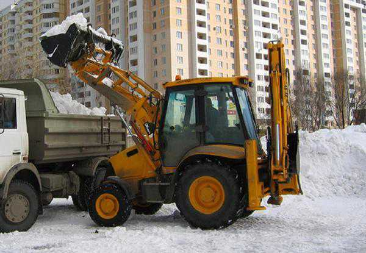
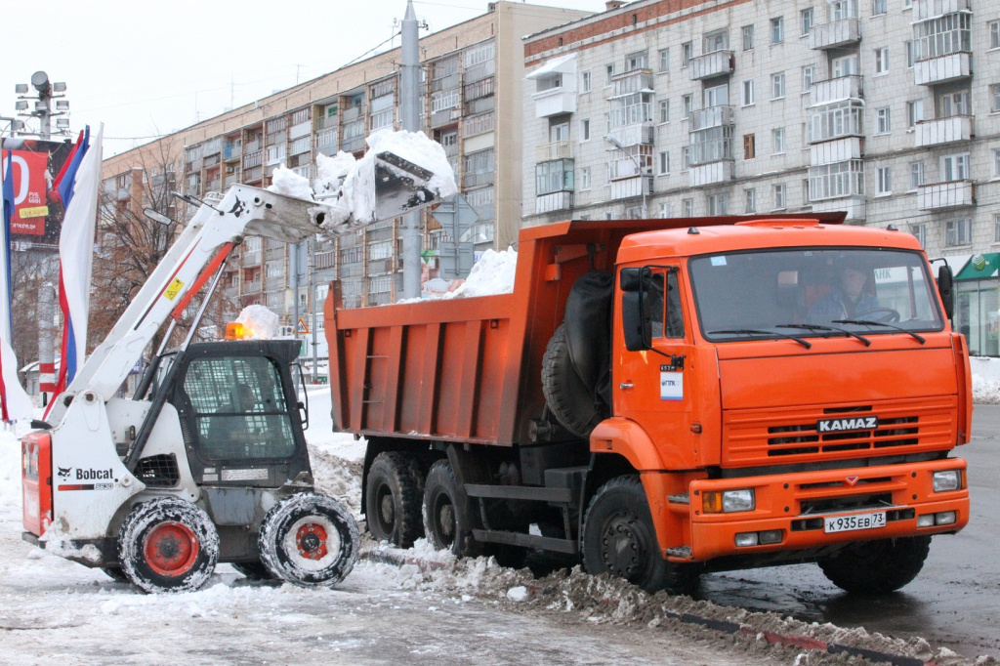

С приближением зимнего периода любой крупной компании прибавляется дополнительная забота – вывоз снега, постоянная очистка территории от накопляющихся прямо на глазах осадков. Если оставить это дело хоть на пару дней при условии снегопада, то до объекта в итоге можно просто не добраться, рабочий процесс остановится и люди отправятся в вынужденные отпуска. Но даже при менее экстремальных условиях чистить территорию от снега рекомендуется регулярно и тщательно – это позволит технике и рабочим нормально трудиться, не испытывая ненужных сложностей.
Раньше вопрос со снегом решался в лоб – сотрудникам заведения выдавались лопаты, тачки и свободное время, за которое они должны были очистить территорию. Сегодня вывоз и уборка снега выполняются многим специальными компаниями типа Снегирь, поэтому надобность отправлять своих бухгалтеров и инженеров махать лопатами отпала. Подготовленные люди, вооруженные современными техническими средствами, быстро очистят площади любого размера от осадков и наведут у Вас на территории идеальный порядок!
В городе Челябинск много компаний, предоставляющих услуги спецтехники, но если Вы желаете получить лучший сервис по разумной цене, то вариант один – обратиться в Снегирь! Здесь можно заказать не только услугу вывоза снега, но и большой перечень других операций, помогающих навести на территории порядок в любое время года. Главными преимуществами обращения к нам является следующее:
Большой автопарк разнообразной техники. Для вывоза можно использовать большой перечень машин, подходящих под ситуацию по габаритам и грузоподъемности; Скорость. Никаких задержек, промедлений, отговорок и срывов сроков – Вы можете заказать вывоз снега в любое удобное для Вас время и он будет незамедлительно осуществлен. Доступные цены. Цены разнятся в зависимости от выбранного типа техники и продолжительности работы на объекте.
Если перед вывозом Вы желаете также провести уборку территории спецтехникой, то в Снегирь можно заказать и эту услугу.
Уборка снега ответственная задача, от скорости и качества решения которой зависит, сможет ли предприятие, торговый центр, строительный объект функционировать в зимнее время в привычном режиме или нет. Порой даже за одну ночь может выпасть такое количество осадков, что на следующий день просто необходимо быстро их убрать. При этом сделать это вручную за счет лошадиных сил своих сотрудников точно не получится – требуется аренда спецтехники.
Компания Снегирь предлагает проведение уборки снега на выгодных условиях для любого частного или государственного объекта в городе Челябинск. Для этого здесь есть и подготовленный персонал, и материально-технические средства. Вы можете заказать услугу уборки с применением следующих типов техники:
Тракторы лучших мировых марок, к примеру, JCB. Они отличаются высокой производительностью, способностью работать длительный срок, надежностью всех ответственных за работу узлов. Современные тракторы предоставляют своим водителям возможность с минимальными усилиями быстро выполнять большой объем работы
Мини-погрузчики МКСМ отечественного производства. Отличный выбор для заказчиков, которым необходимо быстро зачистить небольшие территории. Интересует уборка снега Челябинск по небольшой цене? – с МКСМ данная процедура будет доступна каждому
Крупные погрузчики JCB. Отличный вариант для случаев, когда необходимо быстро выполнить большие объемы работы, особенно в ситуациях с сильными снегопадами.
Уборка снега трактором или погрузчиком от компании Снегирь – возможность быстро навести на объекте порядок, очистить территорию от нежелательных осадков и получить доступ к ней автомобилями и пешеходами. Обращайтесь и получайте только качественную помощь по адекватной цене, которая будет оказана ровно тогда, когда Вы в ней нуждаетесь. Наши операторы техники сталкивались с разными ситуациями, поэтому быстро разберутся на месте, выберут оптимальный вариант решения проблемы и за кратчайшее время выполнят свою работу.
Необходима уборка и вывоз снегас гарантией на результат? – Снегирь всегда к Вашим услугам!